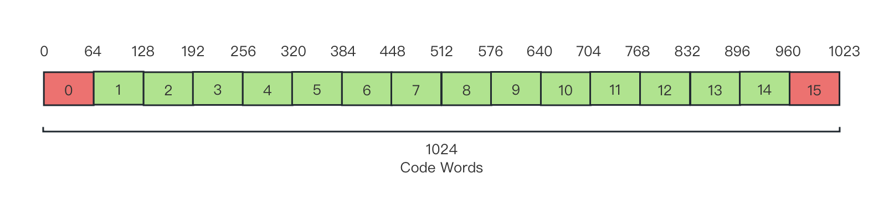
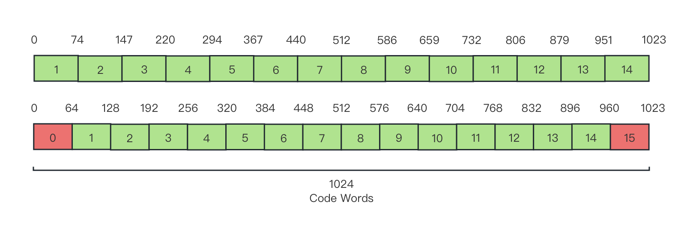

3.4.4 色度缩放亮度映射（LMCS [Luma Mapping with Chroma Scaling]）
色度缩放亮度映射（LMCS [Luma Mapping with Chroma Scaling]） 技术，是一类纯粹的空域数据处理技术，即本身不涉及时域相关性，直接针对像素原值的冗余分离手段。传统音视频编解码中，包括大部分帧内预测工具、帧内编码条带分块、色度重建等，严格来说都属于这种类型。
LMCS 最早引入自 H.266/VVC 标准中，用于编解码环路滤波阶段 [31] 。通过建立从传输格式对应存储位深（Bit Depth），到色度和亮度实际可取值范围间的线性转换放缩，来提高针对 标准动态范围（SDR [Standard Dynamic Range]） 和 高动态范围（HDR [High Dynamic Range]） 视频的支持，提升编解码性能。
这是一种基于物理存储方式和实际规格约束的差异，以直接操作空域到数据的映射关系，来间接降低信息熵的一种技术（有别于熵编码技术族对存储的信息熵直接衰减）。
LMCS 由两个组件构成，分别是：分段线性（Piecewise Linear）亮度映射（LM [Luma Mapping]） 和 依赖亮度（Luma-Dependent ）色度残差缩放（CRS [Chroma Residue Scaling]） ，简称为 亮度映射（LM） 和 色度缩放（CS） 。前者精简格式，后者压缩数据。
分段线性亮度映射
分段线性亮度映射，即 亮度映射（LM） 的基本目的，是为了方便规格支持的传输格式，在数据存储格式（Data Format）和格式空间（Format Space）原值之间的非对称相互转换。
例如，H.266 中采用 ITU-R BT.2100 的色彩转换规格标准，并兼容 ITU-R BT.709 等其他的的历史转换规格。其中，ITU-R BT.2100 提供了 10-bit YUV 存储格式，而老规格中亦然也有一系列 8-bit YUV 存储格式。同时，YUV 本身亦是具有两种基本有效范围，即 狭隘区间（Narrow Range） 和 完整区间（Full Range） 。这些不同的 YUV 格式和区间，虽然各自的原色空间色域表示存在范围差异，但由于传输格式都采用同一套 CIE YUV 色彩空间衡量，因此在颜色的传输格式取值上是互通的，差异只在于存储格式的存储范围上，即两个线性区间的映射。
所以，理论上可以 只采用一个转换标准的传输格式，就能通过数据存储范围的线性转换，实现对所有规格下标准的兼容 。
假设目标 YUV 规格亮度存储值为 Iout 存储取值范围为 Iout∈[Minout, Maxout] ，当前输入 YUV 规格亮度存储值为 Iin 存储取值范围为 Iin∈[Minin, Maxin] ，则：
Iout=Maxin−MininMaxout−Minout⋅(Iin−Minin)+Minin
不过在实际使用过程中，因为均色问题（详见第二章）仍在 CIE YUV 标准空间上存在，亮度值本身在整个色域范围并不均匀，使得亮度值（灰度值）转换到存储值后，存储值也保留了这种性质。这在存储格式和格式空间一致的情况下，由于互为逆变换的缘故，并不存在转换误差。但当两者不一致时，非对称转换非互逆，则会产生误差，并随传输格式的原色格式还原而扩大。如果我们为了保证完美映射，则需要引入复杂的计算，不利于像素通道级别的处理过程。
这个问题，亮度映射提出以 分段牛顿法对亮度存储值取值范围处理 ，即采用分段线性映射来减小误差水平到可接受的范围，并降低算力消耗。
我们一般将原有亮度值对应的可取范围称为原区域，而在此之上分割得到的每个子段，被称为 子区域 。记 原区域码字长（Code Words） 为 CWtotal 个，而位于索引 i∈Z[0, N−1] 位置的子区域 CWi 的码字长为 CWbin[i] 个，均值为 avg(CWbin) 。 码字（Code Word） 即来自哈夫曼编码数据传输中，所指代的有意义代表值，此处则相当于一个范围内有效的灰度值。则：
CWbin[i]=round(iend−istart+1CWtotal)=round(indexavailCWtotal)
其中， iend 、 istart 是实际可用于存放数据子区域上下限的索引的，而 indexavail 即为有效索引的数目。
注意分段码字长和存储格式位深（Bit Depth）并无强相关。若非要建立联系，则两者的关联只相关于取值范围。取 存储格式位长 为 DFbits 位（bit），保护位等效（非整）占用 indexsafe 个索引数目，有：
avg(CWbin)=N2DFbits=indexavail+indexsafe2DFbits
例如，当采用 狭隘区间的 10-bit YUV 存储格式时，由于高低电平保护区域的存在，亮度值能够取值的范围其实是 I∈[64, 940] ，而等效到亮度可用的子区域索引上就相当于只有 Z[1, 14] 可用。那么，就有 avg(CWbin)=64 ，子区域划分如图：

图 3.4.4-1 位深 10-bit 亮度映射码字子区域分段示意图（无修正）
则原线性转换就有分段表示：
Iout=Maxin[i]−Minin[i]Maxout[i]−Minout[i]⋅(Iin−Minin[i])+Minin[i],i∈Z[istart, iend]
即，输入和输出的一一对应分段映射。
现在，基本的分段构建完毕，在数据还原程度上有了可行的保证。但是，这一系列操作除了提供兼容性便利外，在数据量上却是无衰减的，所以 对空域冗余的压缩没有太大的帮助 。
因此，具体采用过程中还要根据情况，从码字方面进行数据优化。
依赖亮度色度残差缩放
依赖亮度色度残差缩放，即 色度缩放（CS） ，顾名思义需要依靠亮度码字子区域划分后的分片进行放缩。不过这种放缩和亮度映射不太一样的一点在于， 它甚至并不和物理意义浅关联，而是存粹作为数据上的处理，来进行的数量级上的放缩 。当然，色度本身是有意义的，这点不能混淆。
色度缩放依旧采用了码字分段处理，为了匹配亮度值对应码字区域的变化强度，分段即与亮度取值范围子区域 CWi 码字的划分一致。以此计算分段内常量的 色度缩放因子（Chrome Scale Factor） ，来对 CWi 内色度进行统一处理。
记 CWi 子区域，编码阶段 色度缩放因子（Chrome Scaling Factor）为 Senc[i] ，解码阶段 色度缩放因子为 Sdec[i] ，显然 Sdec[i]=Senc[i]−1 。若记区域内对应某采样（像素点）亮度 Iin 的色度值（如采用 YUV 则是其 UV 分量，独立计算）为 Cin ，而输出存储值（传输值）亮度 Iout 的色度值为 Cout ，则：
{CoutCin=Cin ⋅Senc[i]=Cout⋅Sdec[i]
而 Senc[i] 和亮度保证相同的放缩比，有：
Senc[i]=Maxin[i]−Minin[i]Maxout[i]−Minout[i]+ΔCRS=Sdec[i]−1
其中， ΔCSR 即为色度残差修正值，这个量为一个查表或其他方式处理的外部传参。虽然理论上， ΔCSR 可以通过在 LMCS 过程中，以计算当前帧分块局部色度残差，或全局残差均值来代替，但这种做法消耗太多不必要算力而不太可取。另外，考虑到 ΔCSR 在编解码中是个相对常用的概念，可以通过其他模块或方法解决，因此一般 不会在 LMCS 里进行处理。
此处我们认为 ΔCSR 为一个色度放缩修正常量即可。可见色度缩放因子在子区域 CWi 确认的情况下，是一个 固定值 。
现在，LMCS 的理论准备就绪了。我们来看这种纯粹的规格技术是怎么运用的。即，子区域码字修正过程。
LMCS 技术在 SDR 和 HDR-HLG 格式中的应用
我们在对图片进行信息分离和提取时了解到，从频域来看，光亮度（灰度值）变化较大，且对亮度精度要求高的部分，一般在低频轮廓区域出现，占用整体数据量比例较小。而光亮度差异较小，变化平滑，且精度要求低的部分，往往是高频区域，占有大量的数据。此时，如果从光亮度数据，即空域角度出发，低频区域内的 局部亮度方差（Local Spatial Variance） 和高频区域相比，与 全局平均空域亮度方差（Global Average Spatial Variance） 的平均平方误差（MSE [Mean-Square Error]）则会更大。
通过这一点，我们能够可以在一定程度上，只通过空域亮度数据，就确认是否是低频或高频区域，从而为其分配更少或更多的码字。使得对精度要求高的低频分割更精细，码字分片信息密度更高。而高频则更粗粒度，码字分片信息密度更低。提高精度并减少不必要的数据占用。
那么用于统计局部方差的样本区域该怎么选择呢？在 H.266/VVC 标准的执行委员会联合视频探索小组（JVET [Joint Video Exploration Team]） 推荐的 VVC 验证模型（VTM [VVC Test Model]）官方工程实践里，仍然采用了基本卷积核（此处即代指正方形的无权重采样窗口），这种便于 GPU 加速改造的方式来进行中心点周边一定区域的关联性采样。
记 局部方差采样核（Local Variance Kernel） 为 LVKp ，简称 方差核 ，中心为 p=(x, y) ，窗口为 K×K 大小。取当前帧画面大小为 W×H ，有经验取值：
K=floor(240min(W, H))⋅2+1
则， LVKp 对应核心点 p 的局部亮度方差 Varp 为：
Varp=K21∑(Ik−Ip)2
于是，只要 确定当前各个分片的平均样本均值情况，就可以进行修正了 。 另一个耗时位置在于亮度均方误（MSE）与全局差值比的计算，一个比较鲁棒的实现是，通过求取落于当前码字分段内，包含样本的 平均对数方差（Average Log Variance） 来代替处理，记为 Varavg[i] ，有：
Varavg[i]=Count[i]∑log(Varp+1.0)
其中， Count[i] 为当前码字分段所包含的样本（即亮度落于区段内的像素点）总数。
而我们需要统一衡量所有码字分片的情况，因此需要归一化处理。记归一化后对应分片的平均对数方差为 Norm[i] ，则：
Norm[i]=Varavg[i]⋅∑Varavg[i]N
至此，我们即可根据归一化的 Norm[i] 取值，开展对当前帧的码字分片进行修正的工作了。取修正补偿为 Δ1[i] 和 Δ2[i] ，记码字分段子区域 CWi 的包含的样本，占总样本比例为 Hist[i] ，且强制 Hist[i]∈[0, 0.4] 经验范围（ 避免失衡 ），有：
Hist[i]Δ==max(min(0.0, ∑Count[i]Count[i]), 0.4){Δ1[i]Δ2[i]=round(10⋅Hist[i])=round(20⋅Hist[i])∈Z
则最终修正后的码字长 CWbin^[i] 与原长 CWbin[i] 的关系为：
CWbin^[i]=⎩⎪⎪⎪⎪⎪⎪⎨⎪⎪⎪⎪⎪⎪⎧CWbin[i]CWbin[i]+Δ1[i]CWbin[i]+Δ2[i]CWbin[i]−Δ1[i]CWbin[i]−Δ2[i],Norm[i]=1.0, 0.8≤Norm[i]<0.9, 0.0≤Norm[i]<0.8, 1.1≤Norm[i]<1.2, 1.2≤Norm[i]
以新分片码字长度 CWbin^[i] 更新子区域 CWi 后，在将修正后的码字范围，代入色度自适应处理，就组成了最终修正标准（注意只有输出码字子区域需要修正），只展示编码阶段，解码取逆运算：
CWin[i]CWout[i]Colorout∈[Minin[i], Maxin[i]]=[Maxin[i−1]+1, Minin[i]+CWbin[i]]∈[Minout[i], Maxout[i]]=[Maxout[i−1]+1, Minout[i]+CWbin^[i]]=⎩⎪⎪⎨⎪⎪⎧IoutCout=Maxin[i]−Minin[i]Maxout[i]−Minout[i]⋅(Iin−Minin[i])+Minin[i]=Cin ⋅Maxin[i]−Minin[i]Maxout[i]−Minout[i]+ΔCRS,i∈Z[istart, iend]
两式结合，即是 LMCS 关于 SDR 和 HDR-HLG 格式的修正公式 。
依旧选 狭隘区间的 10-bit YUV 存储格式 取均匀样本为例，修正后的结果如下：

图 3.4.4-2 位深 10-bit 亮度映射码字子区域分段示意图（修正后）
当然，这一套修正方式，是针对 SDR 和 HDR-HLG 格式采用的 峰值信噪比（PSNR [Peak Signal-to-Noise Ratio]） 指标考核方式进行的。对于采用 加权峰值信噪比（wPSNR [weighted Peak Signal-to-Noise Ratio]） 指标考核的 HDR-PQ 格式，则需要另外的处理流程。具体本书不再行展开，感兴趣可参阅原 H.266/VVC 的 LMCS 补充意见稿 [31] 。
可见偏重于工程规格依赖的技术，和基于现实观察的理论进行迁移的技术，在实践上还是有较大处理细节关注点上的差异的。前者更注重和具体规格设置的匹配（如 LMCS 等），因此相对局限。而后者则更在意规律性质的还原（如 HOG、BDOF 等），对比之下更为通用。同时，前者理论约束较多会比较繁琐，但实现起来的复杂程度和最终效果，却会有较大的波动，即可以非常简单，也可以充满策略。
毕竟对于规格而言，重要的在于规定与限制，以便统一实现。但具体实现的过程，就因设计和目标而异了。
相对于空域两者皆有的情况，频域冗余处理则更偏重依赖传统数学工具，来达成压缩效果。